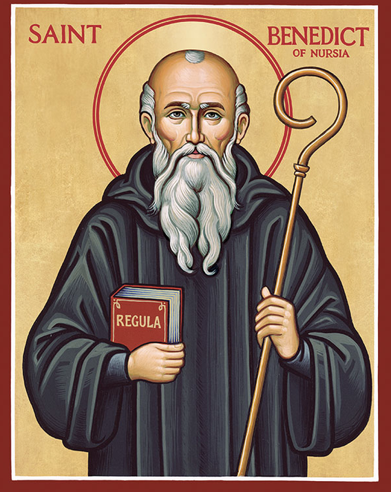
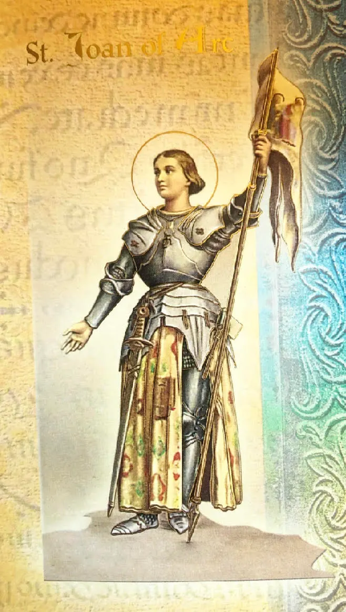
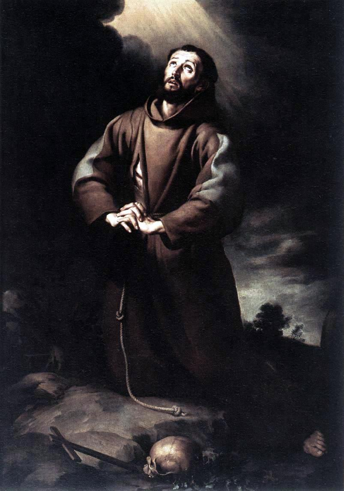

Saint Michael the Archangel
Defender of the Church and protector against evil
View Prayers →Catholic Prayer Categories
Ask the saints to pray with us and for us.
Defender of the Church and protector against evil
View Prayers →
Father of Western Monasticism and patron of a holy death
View Prayers →
Patron of charitable societies and servant of the poor
View Prayers →First Filipino saint and martyr, protomartyr of the Philippines
View Prayers →
Young Filipino martyr, catechist and defender of the faith
View Prayers →
Patroness of soldiers and France, martyr for the faith
View Prayers →
Patron of lost things and the poor, Doctor of the Church
View Prayers →The Little Flower, Doctor of the Church
View Prayers →
Patron of ecology, animals, and peace
View Prayers →